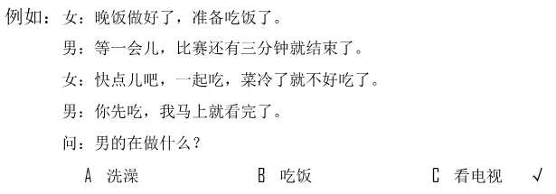
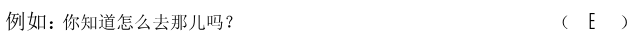
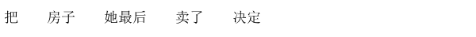

🎧 Phần nghe · Câu 1–40
Bấm phát để bắt đầu nghe. Thời gian làm bài bắt đầu khi bạn nghe hoặc chọn đáp án.
Nghe · Phần 1 · Câu 1–5
Nghe và chọn hình A–F phù hợp.

Nghe · Phần 1 · Câu 6–10
Nghe và chọn hình A–E phù hợp.
Nghe · Phần 2 · Câu 11–20
Nghe và chọn ✓ (đúng) hoặc × (sai).

Câu 11
★他是司机。
Câu 12
★小天在玩儿游戏。
Câu 13
★出门时下雨了。
Câu 14
★他不认识那种鸟。
Câu 15
★他想坐右边。
Câu 16
★小王的女儿是短发。
Câu 17
★那家店不能刷信用卡。
Câu 18
★人很难做到让每个人都满意。
Câu 19
★他以前走路上班。
Câu 20
★很多留学生对中国文化感兴趣。
Nghe · Phần 3 · Câu 21–30
Nghe và chọn đáp án A, B hoặc C.

Câu 21
Câu 22
Câu 23
Câu 24
Câu 25
Câu 26
Câu 27
Câu 28
Câu 29
Câu 30
Nghe · Phần 4 · Câu 31–40
Nghe hội thoại và chọn đáp án A, B hoặc C.

Câu 31
Câu 32
Câu 33
Câu 34
Câu 35
Câu 36
Câu 37
Câu 38
Câu 39
Câu 40
Đọc · Phần 1 · Câu 41–45
Chọn câu A–F phù hợp để ghép với từng câu.

Đọc · Phần 1 · Câu 46–50
Chọn câu A–E phù hợp để ghép với từng câu.
Đọc · Phần 2 · Câu 51–55
Chọn từ A–F điền vào chỗ trống.
Đọc · Phần 2 · Câu 56–60
Chọn từ A–F điền vào chỗ trống của hội thoại.

Đọc · Phần 3 · Câu 61–70
Đọc đoạn văn và chọn đáp án đúng.

Câu 61
现在越来越多的人喜欢拿出手机看时间，我还是觉得用手表更方便。
★根据这段话，他更愿意：
★根据这段话，他更愿意：
Câu 62
老人们常说：“饭要一口一口地吃，路要一步一步地走。”做事也是这样，不能太着急，要慢慢来。
★这段话主要想告诉我们：
★这段话主要想告诉我们：
Câu 63
王校长虽然70多岁了，但看起来一点儿都不像，很多人都觉得他只有50来岁。他告诉我们，要想年轻，有两点很重要：第一要少生气，第二要多锻炼，经常跑跑步、打打球。
★王校长认为，想年轻就应该：
★王校长认为，想年轻就应该：
Câu 64
学过的东西，如果不经常看，很容易就会忘记。所以，要想把学过的东西记住，每过一段时间就应该复习一下。
★为了记住学过的东西，应该：
★为了记住学过的东西，应该：
Câu 65
早上我在车站等了40多分钟，也没等到我要坐的那辆公共汽车。我担心再等下去会迟到，就坐出租车来公司了。
★他今天早上：
★他今天早上：
Câu 66
小李，你的鼻子已经好多了，我再给你开点儿药，一周后你再来检查一下。
★小李：
★小李：
Câu 67
这儿的夏天天气变化特别快，有时候上午还是晴天，中午就突然下起雨来，所以我出门前总会在包里放一把伞。
★他出门时：
★他出门时：
Câu 68
爸，我刚才在楼下遇见您以前的学生王雨了，他比过去胖了些，一开始我都没认出来。他也搬到这附近住了，还说晚上过来看您。
★王雨：
★王雨：
Câu 69
这是我女儿，今年秋天就要上一年级了。她不但爱唱歌，也爱跳舞，在家没事的时候，她总是在我和妻子面前又唱又跳，一分钟也安静不下来。
★他女儿：
★他女儿：
Câu 70
过去的几年，哥哥一直很努力地工作，现在已经是他们公司的经理了。他告诉我，要想做出成绩，除了认真工作，没有其他选择。
★哥哥认为怎样才能做出成绩？
★哥哥认为怎样才能做出成绩？
Viết · Phần 1 · Câu 71–75
Sắp xếp các từ đã cho thành câu hoàn chỉnh.
Phần viết được đối chiếu với đáp án mẫu; bỏ qua khoảng trắng và dấu câu. Điểm hiển thị là điểm luyện tập.

Câu 71
Câu 72
Câu 73
Câu 74
Câu 75

Viết · Phần 2 · Câu 76–80
Nhập chữ Hán phù hợp với pinyin vào từng ô trống.